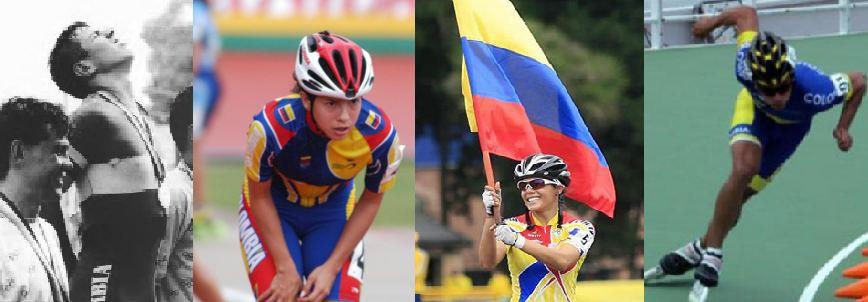

Patinaje

Historia Del Patinaje
En pleno centro de Bogotá se abrió el primer espacio para la práctica del
patinaje a mediados de los años 30 y 40, en el barrio San Diego: eso ya
sucedió hace 80 años. Los primeros patines eran de hierro y se ataban al
zapato del aprendiz con unas cintas de cuero, dando poca seguridad al pie al
ser tan aparatosas.
Había un salón llamado Olimpia al que asistían personas de la ‘alta
sociedad' que estaban interesadas en aprender sobre este nuevo deporte que
al comienzo parecía más entretenido que competitivo.
Cuando en el
Parque Nacional se inauguró una pequeña pista donde era permitido el
patinaje a manera de actividad recreativa, se logró hizo que la diversión
sobre ruedas dejara de ser exclusiva de pocos.
Los hermanos Rodríguez y Osuna, Carlos Jiménez, doña Arnovia de Pedroza,
Cecilia Navarrete y el profesor Boris Rodríguez fueron las personalidades
que impulsaron la modalidad del patinaje de carreras. Entre 1944 y 1945 se
organizaron los primeros grupos de aficionados que quisieron darle una mayor
emoción al crear las primeras competencias. Los primeros colegios del centro
de Bogotá como el San Bartolomé y La Salle, donde se practicaba el patinaje
como parte del plan de estudios, también estimularon para que este deporte
se practicara de forma aficionada.
A partir del momento en que llegó el patinaje a Colombia, se convirtió en el
deporte de gran atención para personas de todas las edades. Esto fue sin
duda lo que permitió que nuestro país se destacara en encuentros regionales
e internacionales con excelentes deportistas.
Hacia 1950 se creó la Liga de Patinaje de Cundinamarca, con sede en Bogotá,
la primera de su tipo en el país. Otras que fueron organizadas poco tiempo
después, como Boyacá y Tolima, participaron en la edición inaugural del
Torneo Interdepartamental de Carreras.
Cuatro años más tarde, en 1954, fue constituida la Federación Colombiana de
Patinaje al mismo tiempo que el deporte se incluyó por primera vez en los
Juegos Nacionales que se desarrollaron en la ciudad de Cali.
Dentro del historial deportivo que posee Bogotá, se destacan los nombres de:
Dagoberto Mateus Celis, Jose Luis Rivas y Edwin Guevara entre otros, y más
recientemente figuras como Anderson Ariza, Anwar Cardenas, Ana María Neira,
Julio Lemoine y Cecilia "La Chechi" Baena, entre otros.